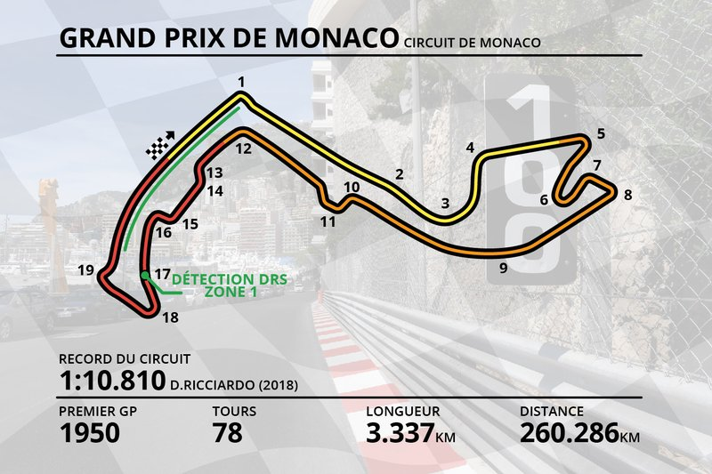
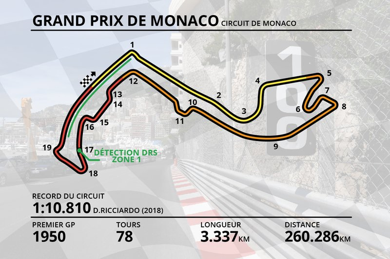

Charles Leclerc
ses meilleurs podiums
Ses débuts en Formule 1
Vainqueur du championnat de GP3 Series en 2016 puis du championnat de Formule 2 2017, il fait ses débuts en Formule 1 l'année suivante, lors du Grand Prix d'Australie, au sein de l'écurie Alfa Romeo Sauber F1 Team.
Son pire accident
la monoplace et ses performances
face a face avec Carlo Sainz
Après une saison compliquée en 2020, entachée d'une lutte interne entre Sebastian Vettel et Charles Leclerc, la Scuderia Ferrari vit une saison 2021 bien plus apaisée. En effet les rouges récoltent plus de points au championnat que l'an passé, leur permettant d'être toujours dans la course à la 3ème place au championnat constructeur.
réseaux sociaux

- le circuit favoris de la Scuderia Ferrari -
circuit très ancien mais reste limité car en 2021 aucuns dépassements
En savoir plus Charles Leclerc...
Charles Leclerc, né le 16 octobre 1997 à Monaco, est un pilote automobile monégasque engagé en Formule 1 au sein de la Scuderia Ferrari. Vainqueur du championnat de GP3 Series en 2016 puis du championnat de Formule 2 2017, il fait ses débuts en Formule 1 l'année suivante, lors du Grand Prix d'Australie, au sein de l'écurie Alfa Romeo Sauber F1 Team. Il marque ses premiers points en prenant la sixième place du Grand Prix d'Azerbaïdjan à Bakou.
Pour sa première saison, il entre dans les points à dix reprises, terminant le championnat avec trois septièmes places consécutives, avant de rejoindre la Scuderia Ferrari ; l'écurie de Maranello l'a en effet choisi pour disputer la saison 2019 aux côtés de Sebastian Vettel, prenant la place de Kimi Räikkönen qui fait le chemin inverse. Leclerc est le troisième pilote monégasque à courir en Formule 1 après Louis Chiron et Olivier Beretta.
Il est le premier Monégasque à obtenir une pole position, à mener une course, à réaliser un record du tour et le deuxième après Louis Chiron en 1950 à monter sur un podium, dès sa deuxième course avec Ferrari, les 30 et 31 mars 2019 à Bahreïn. Il devient, à 21 ans et 10 mois, le plus jeune pilote Ferrari à s'imposer en remportant sa première victoire à l'arrivée du Grand Prix de Belgique à Spa-Francorchamps, et la semaine suivante, le premier pilote de son écurie depuis Fernando Alonso en 2010 à gagner le Grand Prix d'Italie à Monza
 
